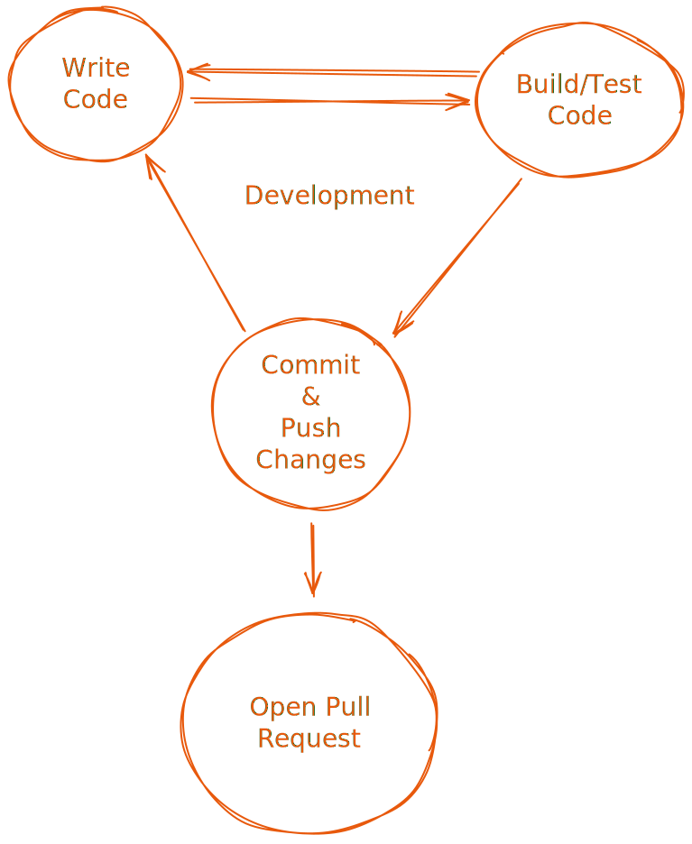
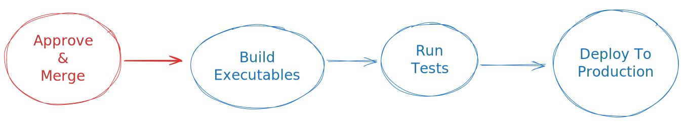
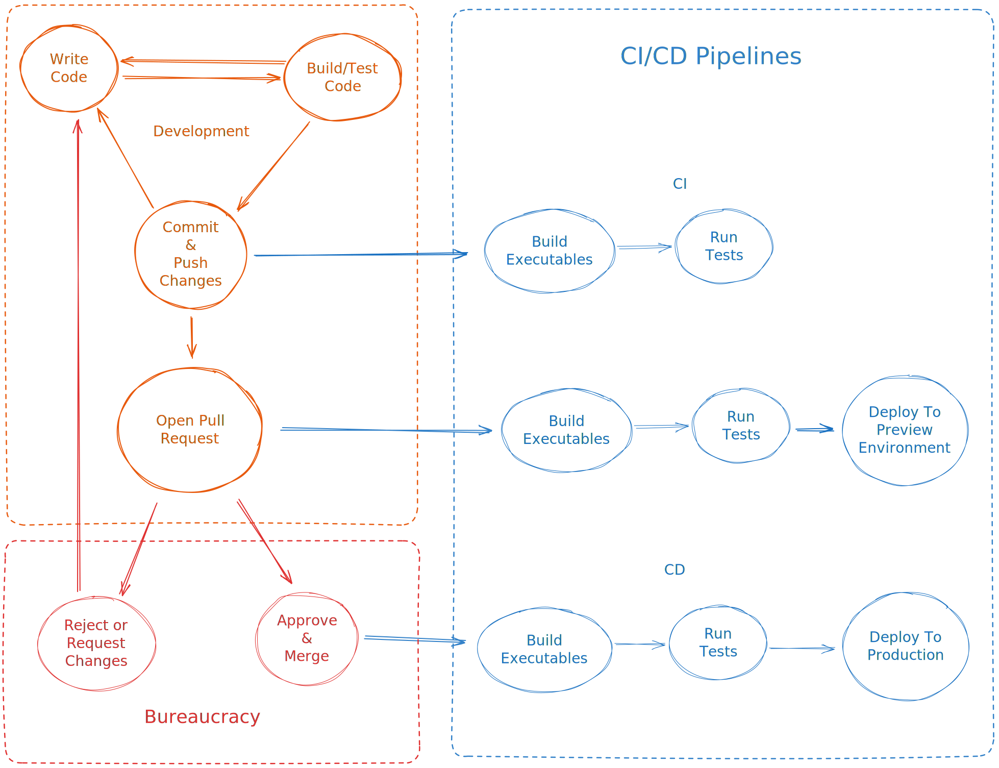
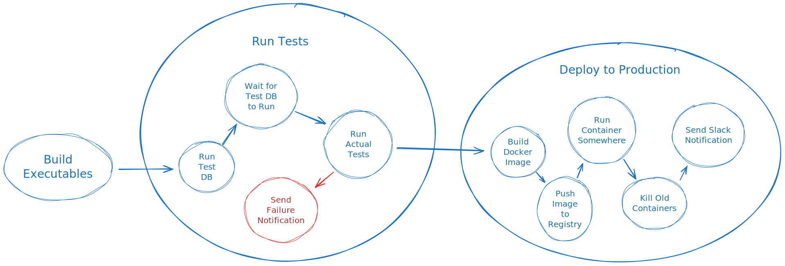

DevOps has gotten to the point where it’s not even easy to define. The field has a lot of history, and with it comes scary terms like “Continuous Integration”, “Container Orchestration”, and worse. I was completely lost when I dove into the subject a few years ago, so I thought I’d make it easier for those after me to wrap their head around what DevOps engineers do, and how.
This post gives an overview of DevOps, its common practices, problems it solves, and the most popular tools used to solve these problems. Whether you’re a fresh grad pursuing a career in DevOps, a hacker looking for the right tool, or an expert in need of a refresher, this post is for you.
Development
Any software engineer (I hope) should be able to write code, run it, version it with Git, and ultimately submit it for production release to be available to end-users.
After the code is released, a bug is reported. It gets assigned to a hapless engineer who fixes it by writing code, testing it, committing it to Git, and opening a pull request to be merged and released. The engineer is then free to start working on a new feature, which involves writing code, running it, pushing the changes, and opening a PR. This is the development cycle.

This is what software developers do: write code to produce software applications that automate business. However, it turns out that developers also need to automate their own work as well.
Many software production tasks must be automated in order to shorten the time it takes to complete the development cycle. Not only to maintain the sanity of developers, but also to maximize their productivity. The faster working code gets shipped to end-users, the better.
One such process that should be automated is building executable programs, which you, as a developer, do multiple times every day. A build tool is the program that compiles all your code files and external libraries and glues them all together to produce an executable application, ready for you to run during development, or send it to a user.
Now, imagine that every time you wanted to run your code after editing it, you had to manually compile every file or module, and then glue the results together to form an executable program. And of course, that wouldn’t work the first few hundred times because you’ve messed up the order in which you compiled your modules, or you tried to skip files you’ve already compiled only to realize that you’ve modified one of their dependencies and you actually needed to re-compile the code with the new dependencies.
Within a week, you would either go insane, or get fired for getting nothing done.
Thankfully, developers before us have already walked this minefield and cleared the path for us. They created build tools like Maven for Java, or Webpack for JavaScript. They automated the process of correctly compiling and gluing things together to produce a runnable app.
Fast-forward a few decades and you’ll find that developers didn’t stop at automating builds, but kept automating other tedious and error-prone tasks. However, these tasks significantly grew in complexity with the growing demand for more scalable systems and processes.
Businesses now have more users. Users now demand more, so businesses hire more developers. Developers need to keep up with the increasing needs of users, so the needs of developers increase as well. More servers, more storage, more complex software architectures, and all of it needs to be reliable, fast, cost-effective, and secure.
Even with all this added complexity, developers are still expected to deliver quickly. Developers needed to specialize. Some should handle the needs of users, while some should handle the needs of their fellow developers.
Enter the DevOps engineer: the engineer whose job it is to ensure that operations run smoothly. And I know “operations” and “smoothly” are broad terms, so hang on.
CI/CD
So, you’ve built your app using your fancy build tool, you ran and tested it, pushed your changes, and opened a PR. Now what? Well, in some companies, this is where you would wait for your changes to be approved by someone else. When you get a green light, you merge and deploy the code, i.e. you run a script or click a few buttons to upload your program to a server somewhere, where it’ll be accessible to end-users.

Better yet, in some companies, you wouldn’t even need to run that script or click any buttons; instead, your code is shipped to end-users automatically when it is approved and merged. This automation is called Continuous Delivery, or CD for short.
Some also take the opportunity to run automated tests automatically when code is pushed, so that the reviewer (the one to approve the changes) would see that the new code mostly works and doesn’t break any existing code. It’s also nice to keep checking changes against upstream code to make sure merge conflicts are resolved as soon as possible. This automation is called Continuous Integration, or CI.

Some take automation even further and deploy a preview environment for every pull request opened. The reviewer (or otherwise, any stakeholder) can go see the new code in action, without having to build the app themselves to run it on their machines. They just go to a link where the new version of the app is hosted, and play with it until they’re satisfied with the work. Once the PR is merged, the preview environment is safe to delete entirely in order to save costs.
In such companies where all this automation is implemented, it’s likely that you’ll find good DevOps engineers. A DevOps engineer’s job is to help developers focus on writing code. Part of the job is to completely automate the deployment workflow. The developer isn’t really required to learn how to get code from the Git repo into the hands of end-users.
It’s enough that a developer knows how to correctly implement business requirements. Developers focus on user-facing features, while DevOps focus on developer-facing features. Developers don’t need to waste time deploying code to test environments for stakeholders.
Tools
CI/CD workflows can get complicated very quickly. You need to trigger them on specific events, like merging a PR into the main branch. Probably, you’ll need to talk to multiple cloud services and SaaS to get the app deployed. Most tasks you’ll perform take a long time to run, and some of them depend on one another to complete. Some tasks can be performed in parallel to speed up the workflow. Some tasks are asynchronous, but you still need to make sure they’ve completed successfully.

We’ll talk about Docker in a bit.
The worst thing you can do when setting out to automate your CI/CD is to create an empty file and start writing a bash script. Please, don’t re-invent the wheel. Most people use workflow orchestration tools to solve these problems.
Many workflow orchestration tools let you specify your workflows in YAML files, and many have CI/CD-specific features. Simple, yet extremely valuable forms of CI/CD can be achieved for free using GitHub Actions. There are also open source solutions like Jenkins or GitLab that you can self-host. And of course, giant cloud providers offer their own tools, like Google’s Cloud Build, AWS CodePipeline, or Azure Build.
Infrastructure
Your server-side apps need to run on servers - actual machines with CPUs and memory. You also need databases, file storage for uploads, and probably much more. Most people use the cloud these days. Providers like Google, Amazon, Microsoft and many others let you pay them in exchange for allowing you to use their computing resources.
However, the services that these clouds provide do not stop at lending you bare metal machines. It’s too much work for you to manage a bunch of machines directly when all you want is to deploy an application with a database and some file storage. Instead, they provide managed services that take a lot of load off your back, especially if you barely know what you’re doing.
For example, you can use a managed database service that automatically takes care of data backups and encryption, and increasing disk sizes according to your usage, without you having to worry about running out of space. A managed database service might also take care of scaling the compute and memory of your database according to load.
You should be careful when using managed services though. Some of them still require considerable knowledge to use effectively and efficiently, since these services automatically increase the resources you’ll end up paying for. Read the docs and understand the pricing very well.
Tools
The list of cloud computing platforms is endless, but there’s a few really big ones:
- Google Cloud Platform (GCP)
- Amazon Web Services (AWS)
- Microsoft Azure
These provide everything you’ll need to build almost anything, no matter how large or small. However, capitalism has its way, and many smaller cloud providers compete with the giants:
- DigitalOcean
- Cloudflare
- Hetzner
- Linode
- Vercel
And many, many others. Each has its own strengths and weaknesses. Pricing is a factor, but the services each provider offers could be the primary reason to pick one provider over the other.
The big providers have the advantage of offering a comprehensive, cohesive suite of products and services that integrate well together, while smaller providers compete with lower prices (Hetzner and DigitalOcean) or incredible developer experience (Vercel). In the end, you’ll need to study what each provider offers to best fit your needs.
Cloud providers usually have a Web interface that you can use to ask for their services. You’ll think I’m crazy at first, but I think you should not use the UI to provision your cloud infrastructure.
I do agree that it’s kind of magical to simply log into your cloud provider’s UI, click a few buttons, and now you have a managed database up and running. It’s quite convenient, sure. But:
- What if you end up using multiple cloud providers?
- What if you end up having to provision lots of databases? Do you wish to click through the same wizard a hundred times?
- What if you click around and everything falls to pieces? How would you know what you did in order to undo it? Once you do know what you did wrong, is it easy to undo?
- What if the UI is
AWScrap? - What if you need to replicate your production infrastructure for staging? How do you keep them in sync?
- What if someone else needs to review the changes you want to make to the infrastructure?
All the above problems can be solved if you define all your infrastructure as code. You write files that describe what you need from the cloud provider, and you let a tool talk to the cloud provider and see what it needs to do to make what you’ve specified in the code match what is actually provisioned.
The most popular and well-supported Infrastructure as Code tool is Terraform. An open-source drop-in replacement to Terraform is OpenTofu.
Deployment
So how does your code get from the Git repository to the server where it runs? How and when does it start running? How do you make sure it will restart if it crashes? How do you make sure there’s no downtime when deploying new versions of your app? Let’s answer these questions one by one.
Containers
If you were thinking of SSH-ing into your server and cloning your repo, or uploading your code to the server via FTP, don’t. There are much better ways these days. You’ve likely heard about Docker by now, but how does it help us get our code to the server?
Docker is known as a container runtime, and it also provides tools for building, storing, and distributing container images. Practically, a container is a process that can run on any machine as-is. A container image is a template that describes a container. You can use an image to create as many containers as you wish, similarly to how you can have a class and create multiple instances from it in object-oriented programming.
What’s nice about using Docker for deployments is that a Docker image contains everything your code needs to run, so you only need your server to have Docker installed, and then you can run any Docker image you want without installing anything else. For example, if you have a NodeJS app, you build an image that contains both the NodeJS runtime and your application code that runs on top of the NodeJS runtime..
When you finally have an image for your app, you can upload it to one of many container registries, which are services that store your images. Once the image is stored in a registry, you can easily pull it to your server and run it.
Docker has become the industry standard for packaging server-side apps. You should really get comfortable with it. Not only to package your own apps, but also to more easily run other people’s apps, be they apps built by other teams in your company, or open-source apps built by the developer community.
Tools
You can upload your Docker images to one of these registries:
Container Orchestration
You now have an easy way to get your apps to servers, but how do you run them? The naive way would be to SSH into the server and run docker run to start your app, and when there’s a new version of your app, you SSH into the server again, kill the old container, and run the new image.
This way of doing things is simple, sure. But it has its issues:
- It introduces downtime when you kill the old container, and if the new container fails to start, there’s even more downtime until you get the old one running again
- It becomes unmanageable if your app runs on multiple servers (more on this shortly)
And to complicate things further, you shouldn’t even run your apps directly with docker run for many reasons, including the fact that Docker on its own is not enough to ensure that your app stays alive - it has no notion of health checks, and it’s not enough for managing a distributed application (an app that runs on multiple servers).
Now here’s where you (the DevOps engineer) need to make a choice: can the business tolerate having a bit of downtime on every new deployment? Does the business not have enough traffic to warrant having multiple servers to handle the load? If the answer is yes, you can probably get away with a very simple deployment setup. But it’s too often the case that the needs of the business require elaborate setups.
Tools
In order to satisfy your business’s availability and scalability requirements when it comes to managing deployments, you’ll likely find yourself reaching for a container orchestration tool. These tools manage your containers for you.
For instance, there are tools that keep probing your app to see if it’s still healthy and responding as expected. If not, the tool kills the app, runs a new container, and alerts you to the problem. The same tool can also manage multiple instances of your app running on multiple servers, which can ensure that there’s always at least one server ready to serve requests at all times if all other servers crash. This tool would also help you with gradual rollouts, meaning that when you have a new version of your app, the tool stops sending traffic to the old version of the app only after it makes sure that the new version is up and running, ensuring zero downtime on each deployment.
The simplest, but possibly the most costly solution for container orchestration is to use a cloud service that simply takes your Docker images, and runs them. It’s that easy. You don’t need to know anything about the actual server where your container runs. These services are known as CaaS, or Containers as a Service. Because you don’t need to know anything about servers to use these services, they’re often called serverless. Most of these services have a decent free tier.
Here are some managed cloud services that can run your containers:
And of course, the giants have their own solutions:
Some serverless hosting services can host your applications without even requiring you to package your app in a Docker image, such as AWS Lambda, Google Cloud Functions, Azure Functions, Cloudflare Workers, and Vercel. However, support for programming languages and frameworks is limited. With containers, you have the freedom to use any language or framework, at the cost of having to build the Docker image yourself.
There also exist many open source solutions out there, and you’ve probably heard of them by now. Kubernetes (k8s for short) is currently the most popular container orchestration framework, with a huge, vibrant ecosystem of tools built around it. With that said, you probably shouldn’t be using Kubernetes on its own, but rather leverage the tools built on top of it.
If you’ve never deployed an app yourself before, don’t use Kubernetes. Stick to managed cloud services instead.
Here are some tools and frameworks built on top of Kubernetes that can dramatically simplify deployments:
- Knative - the framework that Google Cloud Run uses under the hood
- OpenFunction for serverless functions
- Kubeflow for machine learning workflows
Kubernetes, and all projects mentioned above are in some way part of the Cloud Native Computing Foundation (CNCF). Any CNCF project is worth checking out, since these projects are sure to be open-source, well documented, and well maintained. These projects are also likely to be foundational and extremely valuable.
The term “Cloud Native” likely means that the thing works very well with Kubernetes, since Kubernetes is synonymous with open cloud computing these days. This is how important and foundational Kubernetes is.
To make working with Kubernetes more familiar for developers, there are many tools that help you manage Kubernetes using Git, like you would manage any other code. These tools follow GitOps principles, which basically aim to apply software engineering best practices to DevOps. The two most popular GitOps tools are Argo CD and Flux.
Monitoring
When your app is deployed and running in production, you aught to keep an eye on it to see how it’s doing. Is it throwing errors in response to specific user inputs? Is it consuming too much memory? Is it still fast? And if my app runs on multiple servers, how do I trace requests between them?
The first thing we all learn as programmers is how to print “Hello World” to standard output. We also often use prints to debug our applications during development. Printing is sometimes very useful in production as well, error messages and stack traces in particular. Logging things to standard output (or files) is one of the simplest ways for us to observe what happened inside our application.
In a production environment, logs should be stored somewhere for us to revisit when something goes wrong, or to extract insights about our app. So it’s useful to think about logs as data that should be stored in a database.
Logs are great, and everyone should use them, but they’re not great for everything. They won’t help you if you’re trying to know how much memory your app is using. Many argue logs aren’t even great for measuring any type of metric, even though it’s possible. You can measure the number of times an HTTP endpoint was called by counting the number of times a particular log appeared, but you might soon find that things got complicated.
In any case, if logs alone serve your needs well, that’s good. But it’s often the case that you need more precise types of data.
There are three common types of data that helps you know what’s going on with your deployed applications: logs, metrics, and traces. These three types of data are often called telemetry data, and the process of making your apps produce all this data is called instrumentation.
Logs and metrics are widely known, but what are traces? In short, traces are similar to regular stack traces in programming, but they can be distributed across different machines and applications. You can also store useful data in traces to ease debugging, or to make certain traces easy to find.
Tools
So how do you collect, store, and access all your telemetry data? The good news is that you’re well covered by existing tools. The bad news is that you might need to set it all up as a DevOps engineer.
If you’re using a managed cloud service to host your app, you probably don’t need to do anything to get the essentials. Most serverless hosting services store your logs and let you query them, and they also give you basic metrics for HTTP requests and resource utilization.
Even if you’re not using a managed service to host your application, you can still use managed cloud services to monitor your application. New Relic and Grafana Cloud are pretty popular APM (Application Performance Monitoring) platforms. There are also open-source APMs like:
You’re also covered with the giants:
- Google Cloud Monitoring and Logging
- AWS CloudWatch
- Azure Monitor
However, shipping telemetry data to managed service could be annoying to set up. You may need to run and manage an agent that collects data from your applications and machines, and ships it to the telemetry service to be stored. You also need to make sure your app exports telemetry data in the format that the service provider expects.
OpenTelemetry is a CNCF project that standardizes telemetry data formats and transfer protocols, and it’s widely supported by cloud service providers. The best way to instrument your applications is to make them export OpenTelemetry data using the OpenTelemetry SDK for your languages. This helps you avoid changing code if you ever need to change your telemetry service provider, and saves you a lot of time in the future when you want to integrate new applications with new providers, since you’ve already learned how to use OpenTelemetry.
If you’re planning on hosting your own application observability infrastructure, there are many open source solutions available. The open-source solutions mentioned above are all-in-one solutions that you can self-host, but you can get more granular depending on your needs. Be warned though, managing these things in production is risky if you don’t know what your’re doing:
- Elastic Stack or Grafana Loki for collecting logs
- Prometheus or Victoria Metrics for collecting metrics
- Grafana Tempo or Jaeger for collecting traces
- Grafana for querying and visualizing telemetry data from any of the above sources
Hosting any of these solutions on Kubernetes is made much easier for you with the help of operators. However, there are solutions specific to Kubernetes that can make life much simpler for you with fully automatic instrumentation, such as Pixie.
Conclusion
We’ve covered a lot in this post, so don’t feel like you need to understand all of it right away. Keep this post as a reference for the future. But if there’s one thing I’d like you to take away, it’d be that you should take the time to study Kubernetes and its ecosystem if you’re considering a career in DevOps.
It’s also important to remember that we do what we do to satisfy business needs, so keep things as simple as possible.